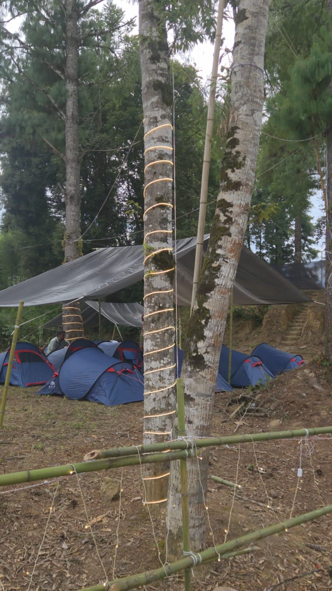
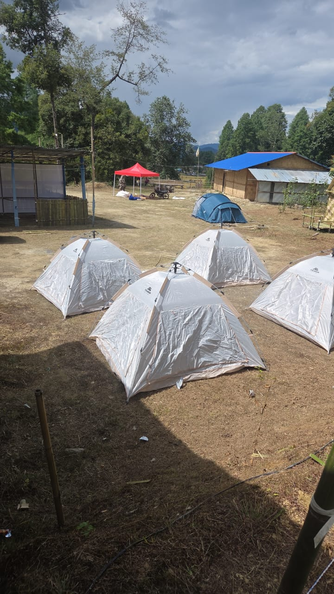
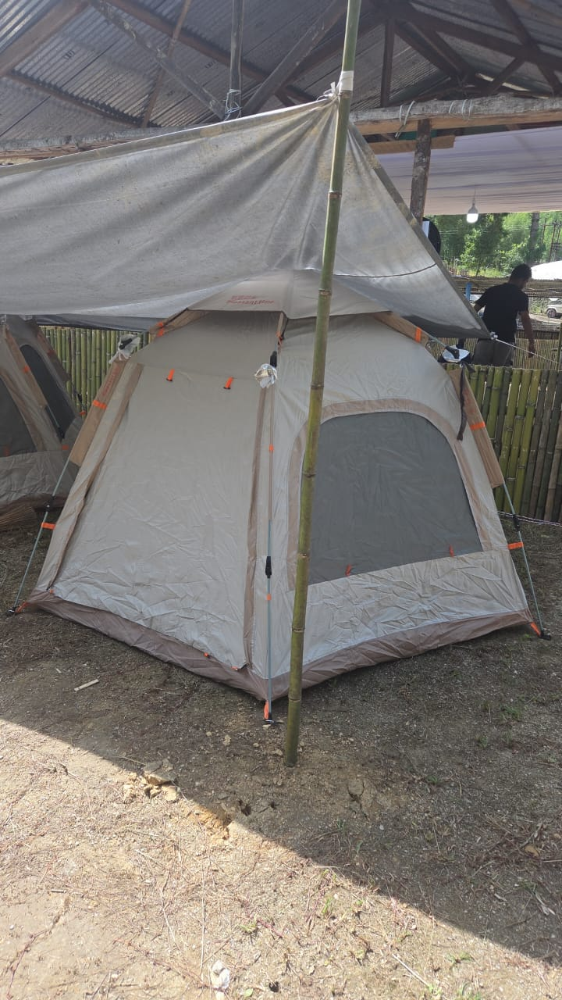
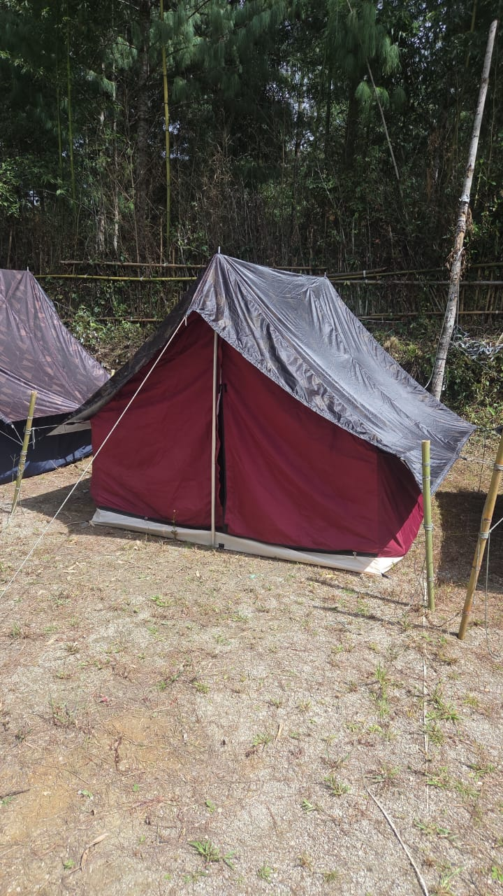

A short walk puts you close to the festival pulse, with less commuting and more time for the music.
Shillong · Cherry Blossom Festival 2026
Cherry Blossom
Basecamp.
Stay close to the music, party longer, and return to a real camp base in the hills. Tents, café, bar, parking and travel support—thoughtfully gathered in one place.
Shillong, closer
Stay close. Party harder. Reset properly.
Northeast Basecamp is a Cherry Blossom Festival campsite designed around the moments before and after the show—not just a place to sleep.
Food, drinks and a familiar camp corner when you want to slow down between festival plans.
Come back to Northeast Basecamp’s biggest Cherry Blossom afterparty, with a lively social camp atmosphere.
Bring your vehicle with confidence. Guest parking is available, subject to on-ground campsite operations.
Stays
Pick a tent. Know what is waiting inside.
Every stay includes a managed camp zone, daily breakfast, bonfire/music zone, in-house café and bar access, and shared toilets cleaned three times daily. Tent-specific kit and prices are shown below.

The solo reset
Solo Dome Tent
₹2,799 per guest
- 1 pillow
- 1 foam sleeping pad
- 1 blanket
One guest, one tent and one personal base for the festival.
Book Solo Dome
The shared comfort
Premium Dome
3P sharing₹2,200per person
2P sharing₹2,999per person
- Foam sleeping pad, pillow & blanket
- No mattress is provided
- Close shared-toilet access
More headroom and a comfortable shared-camping layout.
Choose Premium Dome
The couple retreat
Premium Couple Dome
₹3,999 per guest · 2P sharing
- Mattress, pillows & blankets
- Camping stools
- Close shared-toilet access
A more private two-person tent for a slower festival rhythm.
Choose Couple Dome
The group classic
Alpine Tent
4P sharing₹2,499per person
3P sharing₹3,199per person
2P sharing₹4,999per person
- Mattresses, pillows & blankets
- Close shared-toilet access
A simple, social choice for a group that wants to camp together.
Choose AlpineThe elevated camp
Premium Safari Tent
4P sharing₹4,999per person
3P sharing₹6,999per person
2P sharing₹9,999per person
- Beds, bedsheets & blankets
- Camping chair & camping table
The most furnished tent option, made for a more comfortable camp base.
Choose Safari TentCompare stays
Find your right camp setup.
Rates are per person. Festival entry tickets are separate unless stated in your written booking confirmation.
| Stay | Sharing & rate | Sleep kit | Best for |
|---|---|---|---|
| Solo Dome | 1P · ₹2,799 | Foam, pillow, blanket | Independent campers |
| Premium Dome | 3P · ₹2,200 2P · ₹2,999 | Foam, pillow, blanket No mattress | Comfortable shared stays |
| Premium Couple Dome | 2P · ₹3,999 | Mattress, pillows, blankets, stools | Couples and close friends |
| Alpine Tent | 4P · ₹2,499 3P · ₹3,199 2P · ₹4,999 | Mattresses, pillows, blankets | Groups |
| Premium Safari Tent | 4P · ₹4,999 3P · ₹6,999 2P · ₹9,999 | Beds, bedsheets, blankets, chair, table | Upgraded festival comfort |
Guwahati pickup and drop
Start from the airport city. Arrive ready for the festival.
Guwahati is the preferred long-distance arrival point for many guests. The road journey to Shillong is planned around your flight or rail arrival, guest count and the festival operating schedule.
Share your flight or train details after booking. We confirm the collection point and timing in writing.
Vehicle type is selected around your group size and luggage. Exact route and rest stops are confirmed before departure.
Departure transfers are coordinated around your onward connection, with a sensible mountain-road buffer.
Transfer fares are request-based and not included in festival entry tickets or the tent price unless confirmed in your package.
Travel packages
Two well-paced ways to experience the festival.
Packages follow the Guwahati–Shillong–Sohra–Nongriat–Dawki–Mawlynnong circuit. Festival passes, attraction entry tickets and optional activities stay separate unless your written package confirms otherwise.
4 nights / 5 days
₹16,999 per guest
Festival essentials
A focused festival stay paired with Shillong and one classic Meghalaya day.
- Day 1Guwahati → Shillong
Pickup, hill transfer, Basecamp check-in and a relaxed camp evening.
- Day 2Shillong city + festival
Easy city orientation followed by festival time.
- Day 3Festival day
Slow breakfast, festival time and a shared Basecamp night.
- Day 4Sohra & Nohkalikai Falls
A weather-aware East Khasi Hills day before returning to Shillong.
- Day 5Shillong → Guwahati
Breakfast, checkout and a scheduled drop for onward travel.
Includes scheduled route transport, 4 nights of stay, 4 breakfasts and Basecamp support. Festival passes are separate.
Request 4N/5D package6 nights / 7 days
₹23,999 per guest
Festival + Meghalaya circuit
A complete festival-and-nature itinerary with space for Meghalaya’s iconic experiences.
- Day 1Guwahati → Shillong
Pickup, Shillong transfer, Basecamp check-in and a welcome briefing.
- Day 2Shillong city + festival
Shillong orientation followed by festival time.
- Day 3Festival day
Local food time, music and Basecamp wind-down.
- Day 4Shillong → Sohra
Travel into the East Khasi Hills for viewpoints and waterfalls.
- Day 5Nongriat trek
Double Decker Living Root Bridge trek, subject to weather and guest fitness.
- Day 6Dawki & Mawlynnong
Riverside and village experiences, then return toward Shillong.
- Day 7Shillong → Guwahati
Breakfast and a planned Guwahati drop for onward travel.
Includes scheduled route transport, 6 nights of stay, 6 breakfasts, 4 dinners and Basecamp support. Festival passes are separate.
Request 6N/7D packageFAQ
Cherry Blossom campsite questions.
How close is the campsite to the festival?
Northeast Basecamp is approximately 200 metres from the festival venue.
Are festival tickets included?
No. Festival entry tickets are separate unless a written confirmation specifically includes them.
What does Premium Dome include?
Premium Dome includes a foam sleeping pad, pillow and blanket, plus close shared-toilet access. A mattress is not provided in this category.
Is there a café, bar and parking at the campsite?
Yes. The camp has an in-house café and bar, and guest parking is available subject to on-ground operations.
Can I add Guwahati pickup and drop?
Yes. Add it to your request; the Basecamp team confirms the vehicle, timing and charge based on your travel details and group size.
Booking request
Choose your Cherry Blossom stay.
Select a tent category, share your details and receive a booking invoice immediately. Our team will follow up with availability and transfer options.
Book Cherry Blossom stay